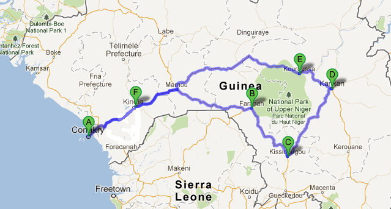

January 13 - February 2, 2018
This trip is chock full of off-the-beaten-path and hard-to-get-to experiences, and is best suited for the more seasoned traveler. Immerse yourself in the rich culture of Guinea,West Africa by living, dancing, and drumming in the villages on this trip. Includes unique exploration and 3 days of festival with more than 400 traditional cultural personalities. Learn to dance and drum with some of West Africa’s finest instructors.
Trip details and itinerary
-
Group Accommodations
Comfortable and secure, our accommodations will be the Mansare family home in Conakry, basic hotel rooms in Faranah and Kankan, and simple traditional, village family style African huts in Dembayara, Baro and Kouroussa.
-
Meals
Three delicious meals a day of West African fare: fish, chicken, rice, fresh fruits and vegetables (vegetarian options available)
-
Dance Classes
Two each day (except the days we are traveling), taught by principal dancers of Les Ballets Africains and other professional dance instructors. In the village we will add traditional local dancers to our teaching staff.
-
Drum Classes
One each day (except the days we are traveling), taught by principal drummers of Les Ballets Africains and other professional drum instructors. In the village we will add traditional local dancers to our teaching staff. (students focused on drum will have 2 drum classes each day, and are encouraged to drum for dance classes)*
-
Transportation
Ground transportation to and from the Airport is provided, as well as transportation to all of our amazing destinations!
Tentative itinerary
Day 1: Arrive in Guinea!
Days 1-3: Stay in Conakry
Days 3: Travel to Faranah
Days 3-8: Stay in Faranah...Visit National Park of Upper Guinea (possible side trip to see Chimpanzees) & Attend 8th Annual Traditional Music and Dance Festival
Days 8: Travel to the village of Dembayara
Days 8-13: Live, dance & drum in the Village of Dembayara near Kissidougou
Day 13-14: Travel to and stay in Kankan
Day 14-19: Travel to and stay in Baro and Kouroussa. Visit Kumana, Sangbarala and other villages
Day 19: Travel to Conakry
Day 19-21: Stay in Conakry
Day 21: Depart Guinea
Sample daily schedule in the Village
8:00-9:00am: Breakfast
9:00-10:30am: Dance/Drum Class*
10:30-12noon: Free Time
12noon-1:00pm: Lunch
1:00-3:30pm: Free Time
3:30-5:00pm: Drum class*
5:30-7:00pm: Dance class*
7:00-8:00pm: Dinner
8:00-???: Free Time/Song class/Language class
*NOTES: Students focused on drumming can replace the morning dance class with a drum class, and are encouraged to drum for the afternoon dance class.
Our schedule while traveling will include dance classes and drum classes, sometimes with our staff, and sometimes with guest local traditional artists.
We always offer separate dance & drum classes for Beginning & Intermediate and Advanced levels, so you can get the most value from your level specific dance and drum classes.
Travel Requirements for Guinea, West Africa

Once registered you will receive a complete Guinea Travel Packet with a full list of travel requirements, packing list, flight requirements, and more - everything you need to simplify your planning.
Overview of requirements
- Current passport
- Travel Visa for Guinea
- Travel insurance
- Proof of Yellow Fever vaccination
- Emergency contact information
- Copy of your flight itinerary
- Optional: register with embassy/consulate
Visa requirements
The Guinean embassy requires that you submit your passport, two completed application forms, and your Yellow Fever vaccination certificate when you apply for your visa. The following website gives you more specifics about how to obtain your visa, and again, once you are registered we will send you detailed information about the best and fastest way to get your visa.
www.traveldocs.com
Vaccines and Medications
While the Yellow Fever Vaccine is the only requirement, we encourage you follow all of the current recommendations and requirements given by the Center for Disease Control (CDC) with regard to vaccines and medications.
wwwnc.cdc.gov/travel/destinations/guinea
US Department of State
Optional - register with embassy/consulate
Travel registration is a free service provided by the U.S. Government to U.S. citizens who are traveling to, or living in, a foreign country. Registration allows you to record information about your upcoming trip abroad that the Department of State can use to assist you in case of an emergency. Americans residing abroad can also get routine information from the nearest U.S. embassy or consulate.
travelregistration.state.gov/ibrs/ui/
Flights
NOTE: We have selected specific flights for you to purchase, please contact us for those details.
Imagine being in the Heart of Guinea

CONAKRY – two full days of welcome and orientation (days 1-3)
Your excitement mounts as you descend into this vital city of 5 million. As you exit the tiny airport, you are struck by the warm air, dimly lit streets and joyous, boisterous, and vibrantly clothed people everywhere you look. Is it some sort of special festival? No, it’s Conakry…welcome to Guinea, welcome to AFRICA! We greet you with warm hugs and whisk you off to the Mansare family compound, where your entire 25 member host team has been anxiously awaiting your arrival. You are lovingly greeted by members of your new family, your drum instructors, dance instructors, cooking team, neighbors, and neighborhood children, lots and lots of children! We help you settle into your simple comfortable accommodations…here we will take a full 2 days to acclimatize to the weather and time change by walking through the neighborhood, visiting markets, working with the tailors, having our first dance and drum classes, and orienting and preparing you for the full 3 week voyage in front of us.

TRAVEL – 1 full day of traveling into the heart of Guinea (day 3)
The day to travel inland has come, and you are ready. As you board the bus with our 12 member travel team of artists and hosts along with drums, pots and pans, tents and water bottles, you can see clearly that you are about to experience something amazing and rare that few others will ever have a chance to experience. Along the 10 hour journey through 3 of the 4 natural and ethnic regions, you note the riches and diversity of this country … tropical beaches, elevated cooler pine forests, and finally dry grasslands and ancient hardwood forests as we arrive in Faranah. Tired and full from the day of travel, we check into the hotel, have a bite to eat, and dive into bed.
FARANAH –1 day of exploration and 3 days of festival (days 4-7)
You wake up ready to explore Faranah, the capital of Sankaran, visit the family of Faduba Oularé (famous drummer) and Mamady Kourouma (famous dancer), view the great Niger River, and perhaps venture into Haute Niger National Park to see the Chimpanzees!
For the next 3 FULL days you are mesmerized, entertained, educated and touched deeply by more than 400 traditional cultural personalities, traditionalists, storytellers, artists, musicians, dancers, hunters, fetishers, sorcerers and masks from all different corners of Guinea AND from countries such as Mali, Senegal, Côte d'Ivoire, Sierra Leone, Burkina Faso, and the Democratic Republic of Congo (DRC). Dundunba at the Festival du Faranah
The ‘Festival de Musiques Traditionnelles et de Contes’ is a special and unparalleled opportunity to witness a wide range of ancient, authentic and sacred African tradition, ceremonies, rituals, folklore and art intact and unaltered by western development. You pinch yourself to see if this is all really happening…though attended by thousands of Guineans, you are surprised to find that you are one of the only foreigners in attendance and think to yourself that this festival is an unknown and hidden treasure; you are so incredibly lucky and honored to be here! You know your life will be forever altered out of experiencing this deep diverse montage of the life and culture of the cradle of humanity.
KISSIDOUGOU & DEMBAYARA – a full week of living, dancing, and drumming in the village (days 8-14)
Just 2 hours further in country from Faranah we arrive in the city of Kissidougou ("place of refuge” in the local language Kissi), descend the bus, climb on some motor taxis, and head for the remote natal village of our host family Mansare, Dembayara. You are already eagerly prepared for this simple, fresh, and natural week of living in huts, drinking well water, dancing in the dirt, savoring village cuisine, connecting to local tradition, and delving into song, music, dance and joy as you have never experienced! How exciting to add in expert local talent to our already amazing teaching staff! Each day is better than the last as you unwind and soften into the community of family and hosts, learning about their lives of cultivation, fishing and hunting, and hear stories of life 800+ years ago…you cannot believe that you get to live and travel with this amazingly well connected and revered Mansare family.
KANKAN – a day of exploring the capital of eastern Guinea (days 15-16)
Known for its Universities, kola nuts, its religious scholars, ‘ngris-ngris’ markets (traditional magic ‘medicine’ supplies), the Milo River, one of the oldest mosques in all of West Africa, and perhaps most importantly, tons and tons of Mangos, no visit to Haute Guinea would be complete without a day in Kankan. We are sure to connect and learn from several well-known and traditional artists here!
HAMANAH REGION: KOUROUSSA, BARO, KOUMANA, SANGBARALA – 4 days soaking in the rich traditions of the birthplace of the Dundunba (days 16-19)
As we round the corner into the final week of this trip, we come ‘home’ to what many people call the birthplace of all of the Malinke music and dance that we love so much…the Hamanah Region. You know it is an absolute honor to stay in Kouroussa and visit some of the surrounding historic villages such as Baro, Koumana, Sangbarala, the home of extraordinary artists such as Fodoba Keita, Famoudou Konate, Daouda Kourouma, Sékou Konaté , Nankouria Moudou Keita, Mansa Kamio and so, so many more. You can feel the centuries of tradition and history, and it somehow empowers and deepens your artistry. Sacred Fromager TreesHere you are beside yourself with the opportunity to at long last be able to study this art in its proper cultural context. We work with a local Dundunba drum and dance company, observe local festivities, and take part in a giant Dundumba celebration. We take the opportunity to visit a fascinating tour of an African gold mine, and on the way back, we stop to sit and appreciate the sacred ‘Fromager’ or ‘Kapok’ trees…900 years old and 200 feet tall, you wish you could see all that these trees have witnessed.
TRAVEL TO CONAKRY – a day of travel through the Fouta Djallon and back to coastal Guinea (day 20)
Leave Kouroussa, pass through Dabola, Mamou, Kindia, Coyah and finally arrive back to our home in Conakry.
CONAKRY – one last day at our family’s home to celebrate all that we have experienced! (day 21)
Happy to rejoin our incredible team in our Conakry campus, we celebrate and share all that we have learned and experienced. What an incredible journey…never to be forgotten. During our last dance and drum classes, you find yourself proud to show what you have learned on this incredible adventure. The connections you have made to the heart of Guinea, Haute Guinea, show up in mysterious ways in your art making… and you look forward to heading home and sharing about the far away and oh so real world of Guinea, West Africa.
Trip pricing & options
3 week trip - $ 2,750 (or $2,450 if registered by August 31)
Choose your payment schedule
- OPTION 1 - Full payment with registration
- OPTION 2 - $500 at registration, $1,000 by November 1, balance by December 1
Airfare not included - see trip details and itinerary for what's included in your trip
Cancellation fees
- $200 before November 1
- $500 after October 31
- $1,000 after January 31
- 100% after 1 week prior to start of trip
Customized Trip Options
Shorter or longer stays can be arranged.
We also offer substantial multi-trip discounts. Contact us for specifics.
Are you ready?
Sign up for inland Guinea trip“My journey to the land of Guinea with One World Dance & Drum was truly life altering. I am not the same person I was before this experience and there's not a day goes by that I don't think of it. The people of Guinea are like no other. Strong, gentle, joyful, inclusive, spirited, a lightness of being - all in spite of crushing poverty and a lack of infrastructure to meet the most basic needs we tend to take for granted. Music and song are tightly woven into the fabric of everyday life in Guinea, a music that grabs your soul and holds you up in good times and bad. I am forever grateful to One World Dance & Drum for opening my world to Guinea, for being incredibly mindful hosts and for taking care of us like family. And they work tirelessly to spread their love for this culture by keeping us connected to it here in our US community - through dance classes, workshops, communications and friendly Guinean gatherings throughout the year. Thank you One World Dance & Drum!" (December 2008 Guinea Trip) ”
“Sarah Lee is a clear energetic passionate teacher. She is committed in every way to African dance and music. She has amazing integrity and is always upbeat and positive as a person. A delightful person to have in your life!!”